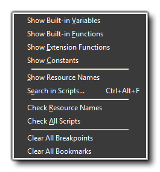
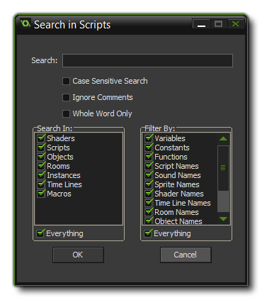

This menu has a number of options that relate to the internal
scripting functions as well as the script resources that you can
create:
- Show Built-in Variables: This will bring up a list of all the global variables as well as a list of all the instance variables common to all objects.
- Show Built-in Functions: This will show a complete list of all the functions available in the GameMaker Language (GML).
- Show Extension Functions: If you have installed any extensions then clicking this will bring up a combined list of all the functions and constants used by them.
- Show Constants: This will bring up a list that shows all the constants that exist to be used in GameMaker: Studio.
- Show Resource Names: This will bring up a list that shows all the current resource names used in the project.
- Search In Scripts: This brings up a search form that can be used to search through various resources to find a specific string or function and it includes a number of options to make the search as narrow or as broad as necessary. This is an extremely powerful tool for changing things within a game or for debugging when there is a problem with a variable name or a function. The following window will pop up and allow you to narrow or widen the search as needed: 
- Check Resource Names: To check and make sure that no name conflicts exist you can choose this command. GameMaker: Studio will not allow you to name two resources with the same name, but if you merge files or import an older format project, then this may happen. If it does, you may get odd behaviours and even errors, which can be resolved by using this.
- Check All Scripts: This will run a check through all objects, instances and rooms that have GML in them for errors and display them in a list. You can then click on any errors that are displayed to be taken to the properties window of the relevant resource to fix it.
- Clear All Breakpoints: Clears all the breakpoints from your project.
- Clear All Bookmarks: Clears all the bookmarks from your project.